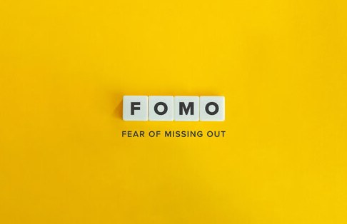
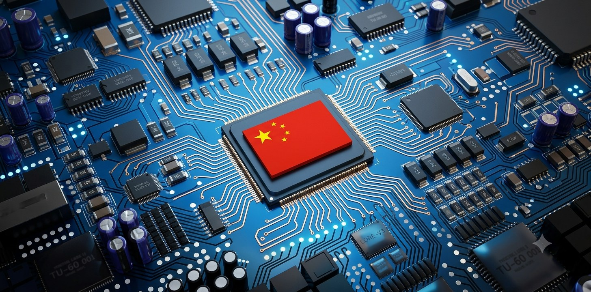
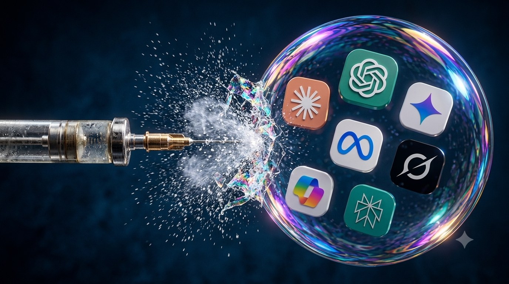

Spotting a Bubble Isn't About Whether the Technology Is Real
"This technology will genuinely change the world" and "this stock is worth buying right now" are two completely different claims. The internet did change the world — and most of the dot-com companies from 2000 still went to zero anyway. Whether a technology has a future and whether today's price has already borrowed against that future have never been the same question.
Bridgewater founder Ray Dalio spent decades building a framework for spotting bubbles, tracing it back to 1900. His logic is straightforward: a bubble isn't identified by whether some technology is genuinely impressive — it's identified by whether four signals show up together. This isn't a prediction tool. It's more like a checklist for judging how close the current moment sits to a textbook bubble.
Four Signals, Paired With Two Historical Cases
The first signal: wealth is growing faster than the real capital backing it. Sounds abstract until you see an example — a $50 million raise that values a company at $1 billion effectively conjures nearly a billion dollars of paper wealth out of $50 million actually changing hands. The dot-com bubble is the textbook case: the NASDAQ Composite surged from 751 in 1995 to a peak of 5,048 in March 2000, a 572% gain. Plenty of newly listed internet companies had no profits, and some couldn't even clearly explain how they made money, yet commanded valuations in the billions. Cisco's stock at one point traded at 200 times sales, versus a normal range of 1 to 5 times for mature companies.
The second signal: buying is driven by borrowed money, not cash on hand. This might be the single most important one for judging how much damage a downturn can do — borrowed money loses faster than money you actually own. The 2008 housing bubble is the most extreme demonstration: in 2005, 43% of first-time homebuyers put zero money down. By mid-2008, 57% of the 55 million mortgages in the U.S. financial system were subprime or otherwise low-quality, and the market for bundling those mortgages into securities grew from $148 billion in 1999 to $1.2 trillion by 2006. The moment home prices stopped rising, the whole structure — built on borrowing more to buy, betting prices would keep climbing — collapsed. Dot-com showed the same signal: retail margin debt jumped from $150 billion in 1998 to $260 billion in 2000, the year the market was already coming down.
The third signal: FOMO overrides analysis. The reason to buy isn't research into fundamentals — it's fear of being the last one left out. Both prior cases show this clearly: internet stocks got bid up just for having ".com" in the name, while home buyers rushed to sign before they felt priced out for good, convinced prices would only keep climbing.

The fourth signal: it usually rides alongside a genuinely new technology, which makes it feel different this time. This is the one that disarms people most, precisely because the technology part is real. The internet genuinely did change the world, and rising homeownership carried real social value — the "this time is different" story in both cases had some truth to it. That didn't make the prices rational.
What finally broke both bubbles wasn't hype fading on its own — it was external pressure forcing the issue. For dot-com, it was rising interest rates: as safer yields became attractive again, capital pulled out of riskier assets, and the NASDAQ eventually gave back 78% of its gains. For housing, prices simply stopped rising, which caused the entire leveraged structure to collapse in on itself — prices eventually fell roughly 32%, triggering the wider financial crisis.
Run the AI Boom Through the Same Framework
Signal one (wealth outrunning real capital): partially present, but messier than the previous two cases. Nvidia's market cap has crossed $5 trillion at points — but unlike dot-com-era companies, there's real, substantial profit behind it. What's worth watching is where valuation has clearly outrun revenue: the AI industry as a whole is estimated to burn around $400 billion a year against just $50–60 billion in revenue. OpenAI's annual compute spend runs around $60 billion against roughly $13 billion in revenue. That gap isn't small.
Signal two (debt-driven buying): this is where the current boom diverges most sharply from the previous two cases, and it's the one worth watching most closely. Earlier AI investment was funded mostly through equity. That's shifted visibly toward debt. CoreWeave took out an $8.5 billion term loan in March 2026 alone just to scale infrastructure. More notably, ratings agency Moody's reports that hyperscalers collectively carry roughly $662 billion in data center lease commitments not yet reflected on their balance sheets. Analysts broadly agree this is what makes the current boom potentially more dangerous than dot-com: that one was mostly an equity bubble. This one has debt layered on top, and a debt unwind tends to do more damage.
Signal three (FOMO): present. Companies keep pouring money in even without certainty of near-term payoff, afraid that falling behind now means never catching up. That mix — afraid to sit out, unsure if going in even pays off — is FOMO in its classic form.
Signal four (a genuinely new technology): fully present, following the same script as every prior bubble.
Upstream Is Booming, Downstream Is Getting Nervous — and That Gap Might Be What Triggers Things Early
Looking only at chips and infrastructure, AI demand shows no sign of slowing. TSMC's most recent earnings call was close to flawless: quarterly revenue topped NT$1.27 trillion, net income hit NT$706.5 billion, up 77.4% year over year and a record high, with gross margin reaching 67.7% — meaning for every NT$100 of revenue, NT$67.7 was left after direct production costs. The company even raised this year's capital expenditure guidance from an original $52–56 billion to $60–64 billion, a sign that orders keep climbing.
And yet, right after that report, TSMC's stock fell. The market's concern isn't TSMC itself — it's that TSMC only represents the very top of the AI supply chain. Selling chips well doesn't guarantee that the companies buying those chips, building those data centers, and paying for that compute are actually turning the investment into revenue they can point to.

This is exactly where several prominent voices in the tech world have recently raised concerns publicly. Silicon Valley investor Chamath Palihapitiya has pointed out that many companies rushed into AI adoption without anyone stopping to run the most basic math: if several major companies are each spending tens of billions a year on AI, where does that money actually come back from? Framing an AI model as a kind of "intelligence" product, prices across providers vary wildly even though the underlying technology investment looks similar — a gap that eventually has to get rationalized somehow. He's also flagged a phenomenon nicknamed "token maxxing" — some companies have started comparing who burns through the most AI tokens, without checking whether that spending is actually generating revenue or saving labor costs. There are already real examples of companies blowing through an entire year's AI budget in three or four months, and of tech firms later admitting some of their AI usage was unnecessary and cutting it to get costs under control. Companies have been mistaking "how much AI we use" for "how much value AI creates," and the market is only now starting to check whether that math actually works out.
That line about pricing gaps eventually needing to be rationalized recently got a very concrete example. Kimi, a model built by Chinese startup Moonshot AI, offers performance close to — and in some benchmarks ahead of — leading Western models, priced at roughly $0.60 per million input tokens, somewhere between a quarter and a twenty-fifth of what mainstream closed-source models charge. If an open-source, low-cost model can get this close to the frontier, then the valuations and revenue expectations built on the assumption that customers will keep paying premium prices for top-tier models may be more fragile than they look.
Enterprise Data Getting Locked Into Someone Else's Platform May Be an Underrated Risk
Beyond cost concerns, there's another angle worth watching: who ends up owning the data and the intellectual property. Palantir CEO Alex Karp has publicly warned that every time a business uses an AI tool, it's also continuously feeding years of accumulated operational knowledge, customer data, and industry expertise into someone else's system. The longer a company relies on it, the deeper that dependency runs — but the model, the platform, and the pricing power all stay in the hands of the company providing the service. In other words, a business pays for usage, contributes its own data, and may end up locking years of hard-won competitive advantage inside a platform it has no real control over.
That warning, to be fair, also happens to align with the commercial interests of the person making it — Palantir sells services built around letting clients retain control of their own data. That doesn't mean the underlying risk isn't real, especially once these concerns extend into more sensitive territory like defense and national security, where the question of who actually controls the system stops being just a single company's cost consideration.
If more enterprise customers start hesitating — willing to keep paying for usage, but no longer sure they're comfortable giving up control of their own data — that shift in confidence could show up earlier than the market currently expects. This is exactly how strong upstream demand and softening downstream confidence can both be true at the same time — and that downstream hesitation may be precisely the catalyst that eventually strains the entire valuation logic holding this up.
A Feature Unique to This Cycle: Circular Financing
There's a structure that didn't show up in either previous case — analysts call it circular financing. Simplified: a chip maker invests in an AI startup, the startup uses that money to buy chips from the same chip maker, that purchase becomes revenue for the chip maker, which drives up its valuation, letting it raise even more capital to invest in even more startups. Capital circulates within a relatively closed loop rather than flowing in from outside it. Whether this structure holds up ultimately depends on whether the businesses and consumers actually using AI generate enough real revenue that the loop doesn't need to keep expanding indefinitely just to sustain itself.

The Other Side of the Argument
Not every analysis calls this a bubble. Some point out that corporate cash flow today is roughly triple its 1999 level, meaning there's a thicker cushion to absorb risk. AI has also generated measurable revenue and real-world use, unlike some purely speculative assets. Others argue the better comparison isn't the dot-com crash at all, but the 1990s telecom infrastructure boom — a bust that was just as brutal, but where the fiber-optic networks laid down during the mania eventually proved to be genuinely valuable long-term infrastructure. The market just paid for it years too early.
What This Framework Can Tell You — and What It Can't
Of the four signals, at least three are clearly present in the current AI boom, and the fourth is partially present, though messier and harder to call outright than in the previous two cases. That doesn't mean the technology is fake, and it doesn't mean every AI-related stock is destined to crash. A signal being present means the environment has the structural conditions historically associated with bubbles forming — it doesn't mean anyone can predict whether or when a correction actually happens.
If there's one thing that sets this cycle apart from the previous two, it's the revenue gap at the industry level — not one overvalued company, but an entire sector burning hundreds of billions of dollars a year while pulling in a fraction of that in revenue. A gap this size, sitting at the industry level rather than the single-stock level, can turn into systemic risk faster than a single bubble ever could once financing conditions tighten. That's exactly why debt-driven buying is worth watching most closely this time.
That's the real use of this framework. It isn't a prediction machine. It's a checklist for self-examination. Rather than guessing when an AI bubble might pop, the more useful thing is to face honestly that the environment shows most of the classic signs, that the industry-level revenue gap is widening, and that the gap between roaring upstream demand and wavering downstream confidence may be exactly the kind of catalyst that ends up triggering things early. Then ask yourself: if a correction did come, would your own position be able to hold?
Figures compiled from public market data, company earnings reports, and analyst commentary from Chamath Palihapitiya and Alex Karp.